PROJET E5 · BTS SIO SISR
Active Directory
& Stratégies de Groupe
Domaine sisr.local · Windows Server 2022 · GPO
Présentation du projet
Contexte
Dans le cadre du BTS SIO option SISR, ce projet consiste à déployer un contrôleur de domaine Active Directory sous Windows Server 2022, puis à centraliser la gestion des utilisateurs, des groupes et des droits d'accès d'un réseau d'entreprise. Un poste client Windows 10 rejoint ensuite le domaine pour valider l'authentification et l'application automatique des stratégies de sécurité.
Problématique
Comment centraliser la gestion des utilisateurs et des droits d'accès sur un réseau d'entreprise, tout en appliquant des stratégies de sécurité uniformes sur tous les postes clients, sans intervention manuelle machine par machine ?
Stack technique déployée
| Composant | Rôle |
|---|---|
| Windows Server 2022 | Système du contrôleur de domaine SRV-AD-01 |
| AD DS | Service d'annuaire – forêt et domaine sisr.local |
| DNS | Résolution de noms + enregistrements SRV (installé avec AD DS) |
| GPMC | Console de gestion des stratégies de groupe (GPO) |
| Windows 10 Pro | Poste client CLI-WIN-01 joint au domaine |
| Kerberos | Protocole d'authentification des comptes du domaine |
Objectifs techniques
- Installer et promouvoir un contrôleur de domaine Windows Server 2022 (forêt sisr.local)
- Configurer le rôle DNS intégré pour la résolution du domaine
- Structurer l'annuaire avec une Unité d'Organisation, des utilisateurs et un groupe de sécurité
- Créer et lier une GPO restreignant l'accès au Panneau de configuration
- Configurer un poste client Windows 10 et le joindre au domaine
- Valider l'authentification Kerberos et l'application de la GPO via
gpresult /r
Schéma de l'infrastructure
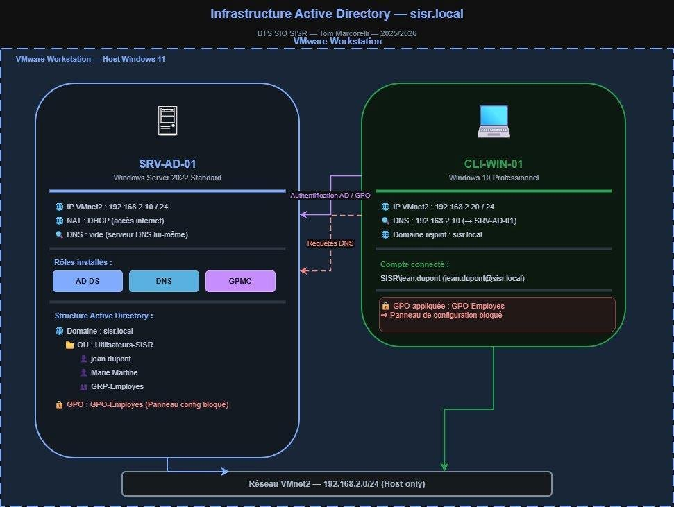
SRV-AD-01 (192.168.2.10) ↔ CLI-WIN-01 (192.168.2.20) — Réseau host-only VMnet2 192.168.2.0/24
| Machine | Rôle | IP VMnet2 |
|---|---|---|
| SRV-AD-01 | Contrôleur de domaine — AD DS, DNS, GPMC | 192.168.2.10 |
| CLI-WIN-01 | Poste client Windows 10 Pro — membre du domaine | 192.168.2.20 |
Réalisation technique
Étape 1 – Préparation du serveur
Avant d'installer le moindre rôle, deux actions sont indispensables : nommer le serveur de façon explicite et lui attribuer une adresse IP fixe. Un contrôleur de domaine doit toujours être joignable à la même adresse.
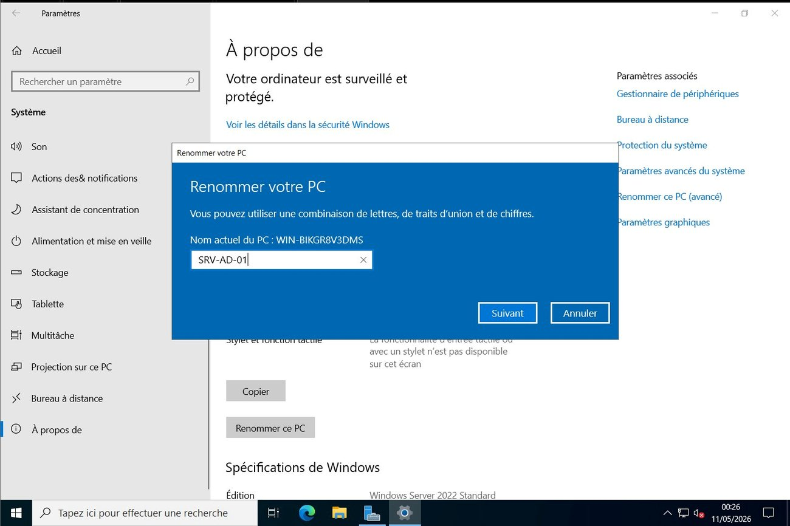
Fig. 1 – Renommage de la machine en SRV-AD-01 (Paramètres → Système → À propos)
Le serveur est renommé de manière explicite avant la promotion en contrôleur de domaine : le nom est intégré à l'annuaire et ne pourra plus être changé simplement ensuite.
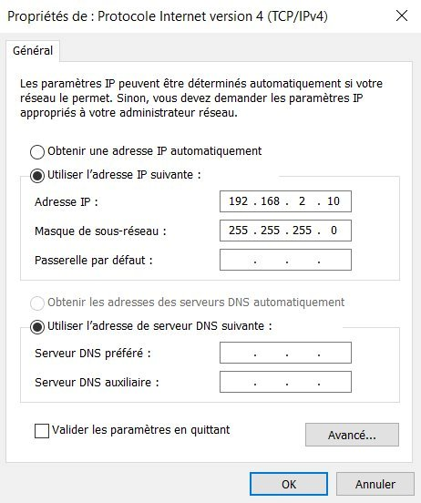
Fig. 2 – Adresse IP statique 192.168.2.10 /24 sur la carte VMnet2
L'IP fixe garantit que les clients trouveront toujours le contrôleur à la même adresse. Le DNS pointera vers le serveur lui-même une fois le rôle installé.
Étape 2 – Installation du rôle AD DS
Le rôle AD DS transforme le serveur en contrôleur de domaine. L'installation se déroule en deux phases via le Gestionnaire de serveur : ajout du rôle, puis promotion.
.local désigne un domaine privé non résolvable sur Internet. Le rôle DNS est installé automatiquement avec AD DS — les postes clients en ont besoin pour localiser le contrôleur via les enregistrements SRV.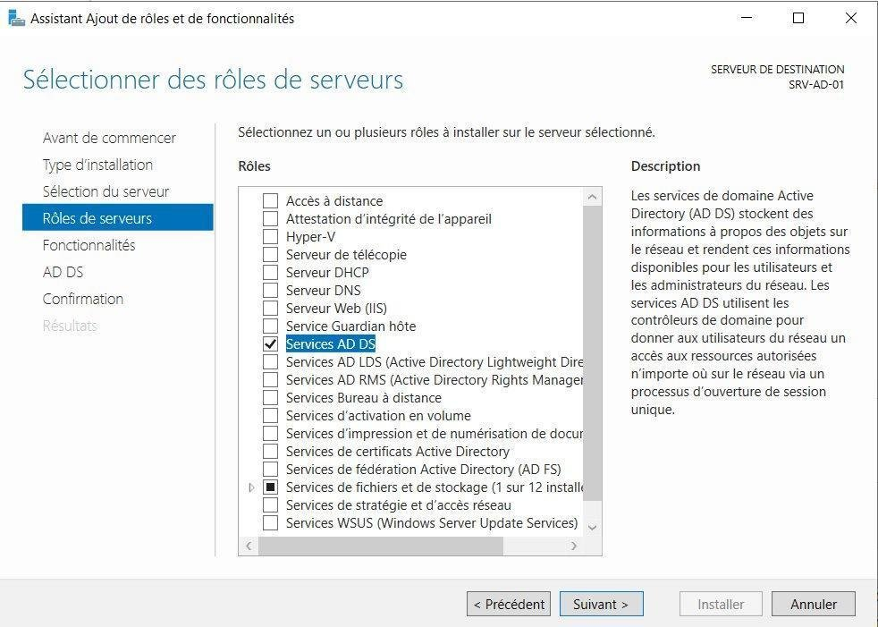
Fig. 3 – Assistant Ajout de rôles → Services AD DS coché sur SRV-AD-01
Les dépendances (module PowerShell Active Directory, outils d'administration) sont ajoutées automatiquement à la sélection.
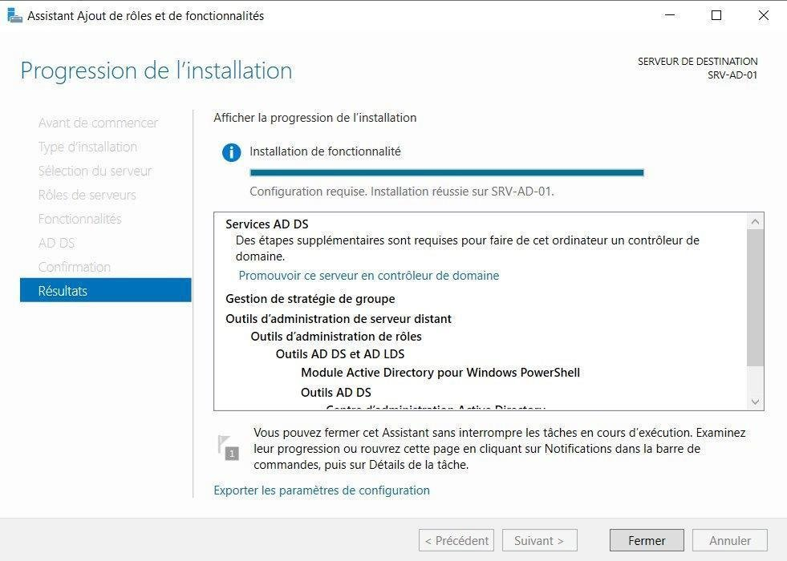
Fig. 4 – Installation du rôle réussie — invitation à promouvoir le serveur en contrôleur de domaine
Une fois le rôle installé, la notification post-installation propose de promouvoir le serveur : c'est cette étape qui crée réellement l'annuaire.
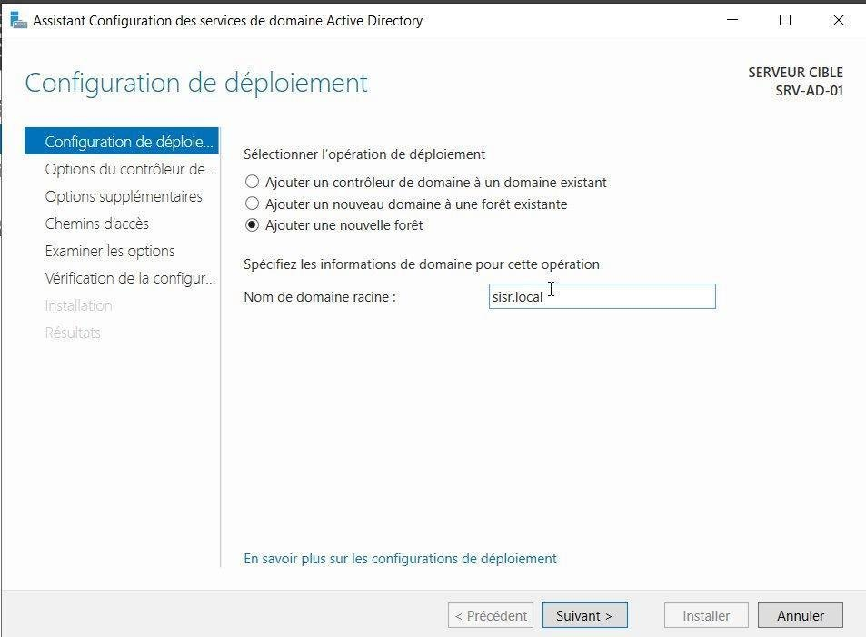
Fig. 5 – Configuration du déploiement : création d'une nouvelle forêt, nom racine sisr.local
On choisit « Ajouter une nouvelle forêt » car il s'agit du premier contrôleur. Un mot de passe DSRM est défini pour la récupération d'urgence de l'annuaire.
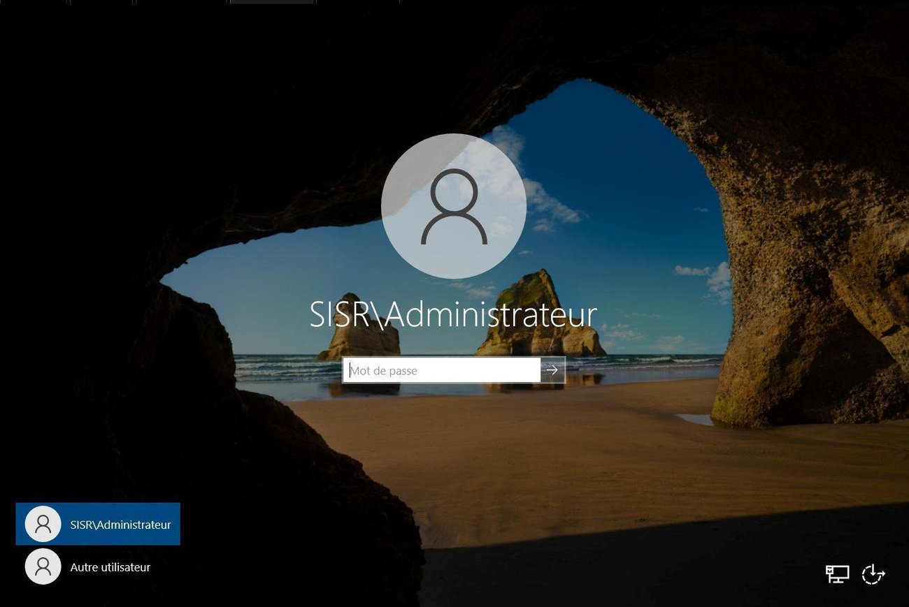
Fig. 6 – Après redémarrage, connexion avec le compte de domaine SISR\Administrateur
L'écran de connexion affiche désormais SISR\Administrateur : le serveur n'a plus de comptes locaux classiques, il authentifie sur le domaine.
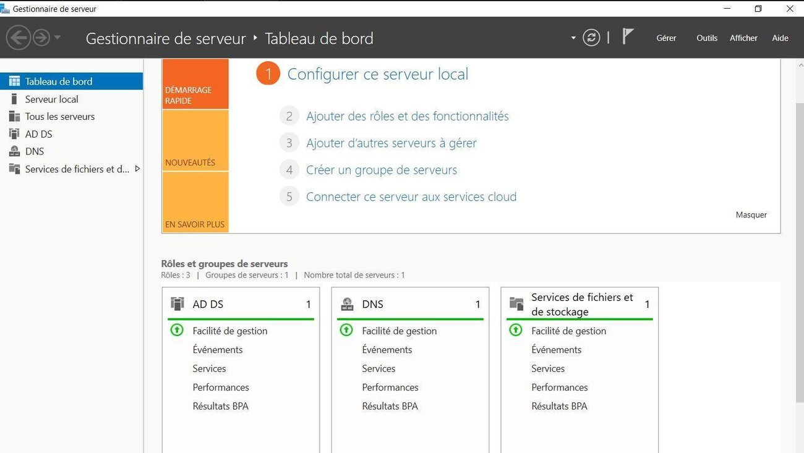
Fig. 7 – Gestionnaire de serveur — rôles AD DS et DNS actifs et sains
Le tableau de bord confirme que les deux rôles fonctionnent : le contrôleur de domaine est opérationnel.
Étape 3 – Structure organisationnelle : OU, comptes et groupe
Les objets sont rangés dans une Unité d'Organisation (OU) — un conteneur logique qui permet de cibler les GPO. On y crée deux utilisateurs et un groupe de sécurité.
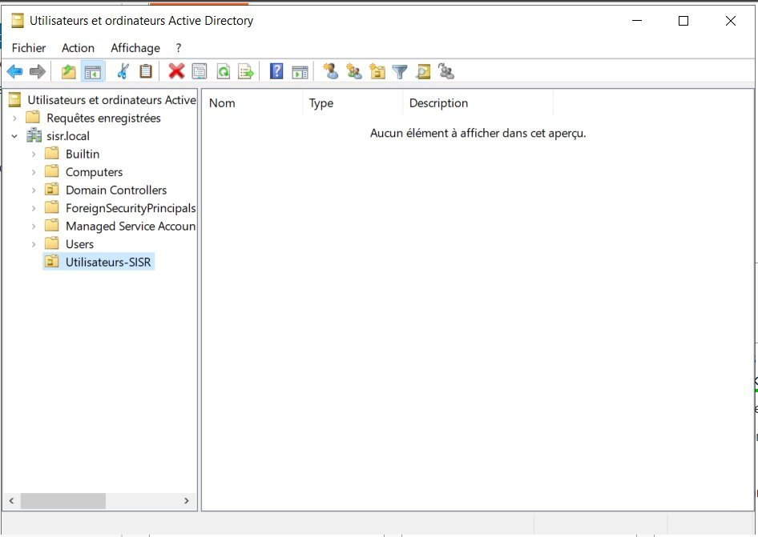
Fig. 8 – Console « Utilisateurs et ordinateurs Active Directory » — OU Utilisateurs-SISR sous sisr.local
L'OU est créée directement sous le domaine. Elle servira de cible pour lier la GPO à l'étape suivante.
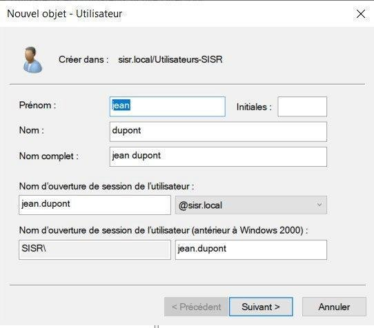
Fig. 9 – Nouvel utilisateur jean.dupont — nom d'ouverture de session jean.dupont@sisr.local
La convention prénom.nom@sisr.local est lisible et unique : c'est la norme en entreprise.
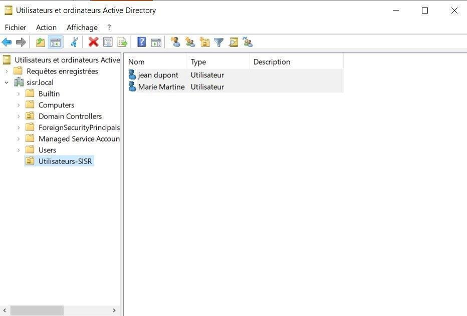
Fig. 10 – Les deux comptes créés dans l'OU : jean.dupont et Marie Martine
Les comptes apparaissent dans l'OU. Ils authentifieront désormais sur le domaine depuis n'importe quel poste membre.
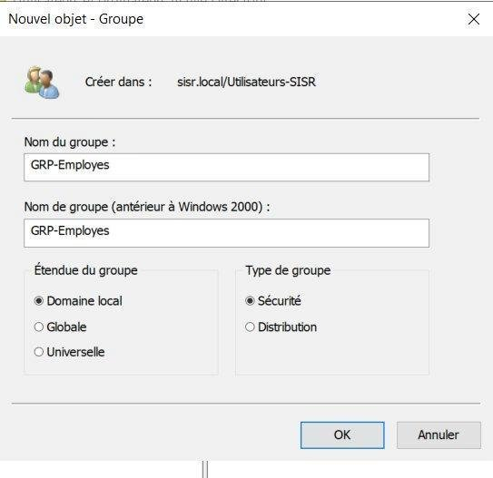
Fig. 11 – Nouveau groupe GRP-Employes — type Sécurité, étendue Domaine local
Un groupe de sécurité permet d'attribuer des droits ou de cibler une GPO à un ensemble d'utilisateurs plutôt qu'individuellement.
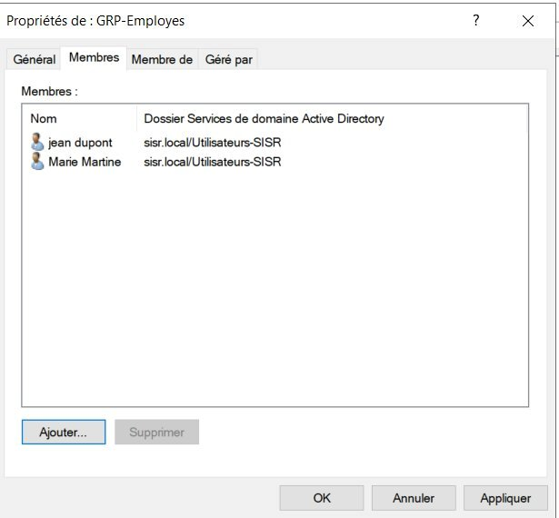
Fig. 12 – Onglet Membres de GRP-Employes — jean.dupont et Marie Martine ajoutés
Les deux utilisateurs sont membres du groupe : toute règle appliquée à GRP-Employes s'applique automatiquement aux deux.
Étape 4 – Configuration de la GPO
Une GPO (stratégie de groupe) est un ensemble de paramètres appliqués automatiquement aux utilisateurs ou ordinateurs d'une OU, sans toucher chaque poste manuellement.
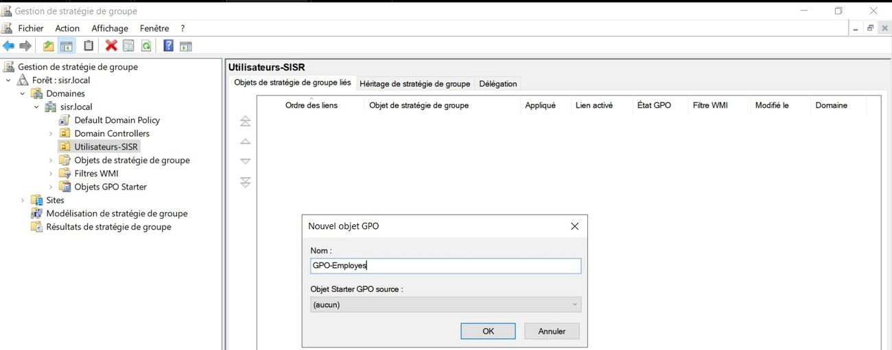
Fig. 13 – Console GPMC — création de la GPO-Employes liée à l'OU Utilisateurs-SISR
La GPO est liée à l'OU : elle ne s'appliquera qu'aux objets qu'elle contient, et pas au reste du domaine.
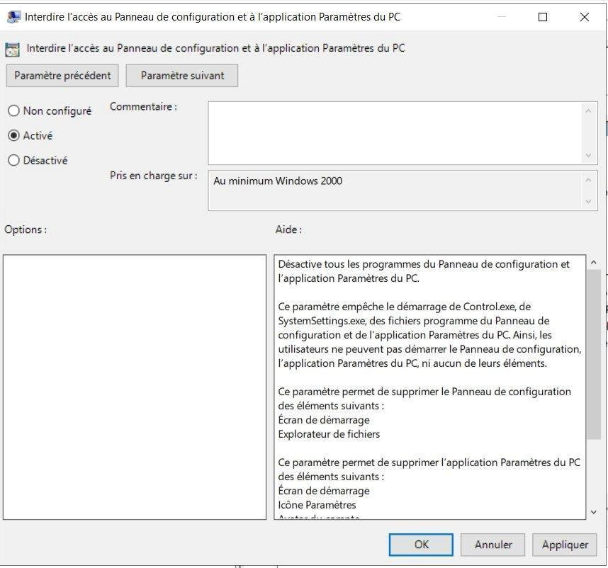
Fig. 14 – Paramètre « Interdire l'accès au Panneau de configuration » sur Activé
C'est la restriction de sécurité concrète : les utilisateurs ciblés ne pourront plus modifier la configuration système de leur poste.
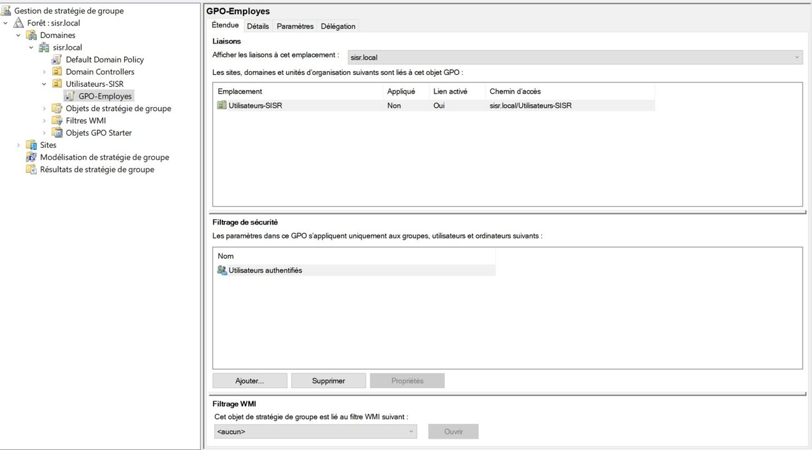
Fig. 15 – Filtrage de sécurité de GPO-Employes — Utilisateurs authentifiés
Le filtrage de sécurité définit précisément à qui s'applique la GPO. La stratégie prend effet à la prochaine ouverture de session ou après gpupdate /force.
Étape 5 – Configuration et jonction du poste client
CLI-WIN-01 reçoit une IP fixe dans le même sous-réseau. Point critique : le DNS préféré doit pointer vers 192.168.2.10 pour localiser sisr.local, sinon la jonction échoue.
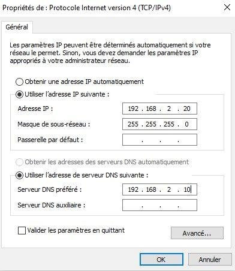
Fig. 16 – CLI-WIN-01 : IP 192.168.2.20 /24, DNS préféré 192.168.2.10 (SRV-AD-01)
Le DNS pointe vers le contrôleur : c'est lui qui résout sisr.local et fournit les enregistrements SRV nécessaires à la jonction.
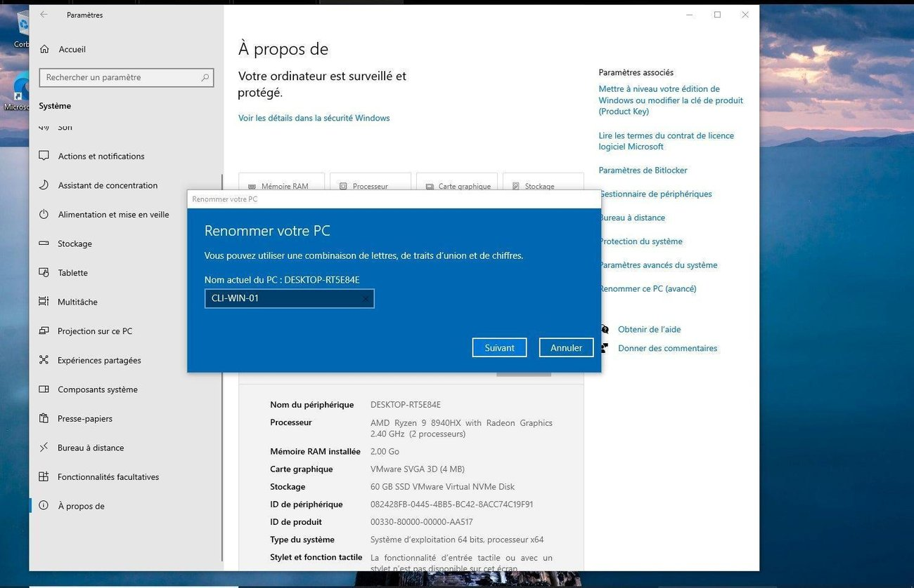
Fig. 17 – Renommer ce PC (avancé) → membre du domaine sisr.local, identifiants SISR\Administrateur
La jonction se fait avec un compte administrateur du domaine, autorisé à créer l'objet ordinateur dans l'annuaire.
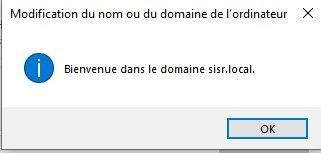
Fig. 18 – Confirmation : « Bienvenue dans le domaine sisr.local »
Ce message valide la jonction. Après redémarrage, l'écran de connexion propose les comptes du domaine.
Tests & Preuves
| Test réalisé | Résultat attendu | Statut |
|---|---|---|
| Connexion jean.dupont@sisr.local | Authentification Kerberos sur le domaine | ✅ OK |
| Type de compte | Compte domaine (non local) | ✅ OK |
| gpresult /r | GPO-Employes appliquée | ✅ OK |
| Appartenance groupe | Membre de GRP-Employes | ✅ OK |
| Effet de la GPO | Panneau de configuration inaccessible | ✅ OK |
jean.dupont@sisr.local. Windows authentifie via Kerberos auprès du contrôleur, charge le profil et applique les GPO de l'OU.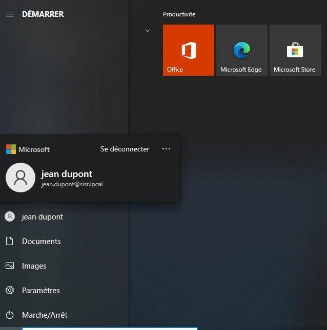
Fig. 19 – Session ouverte sur CLI-WIN-01 avec le compte de domaine jean.dupont
Le menu Démarrer affiche « jean dupont / jean.dupont@sisr.local » : le poste utilise bien un compte du domaine et non un compte local.
gpresult /r, exécutée en tant que jean.dupont, produit le rapport des stratégies réellement appliquées.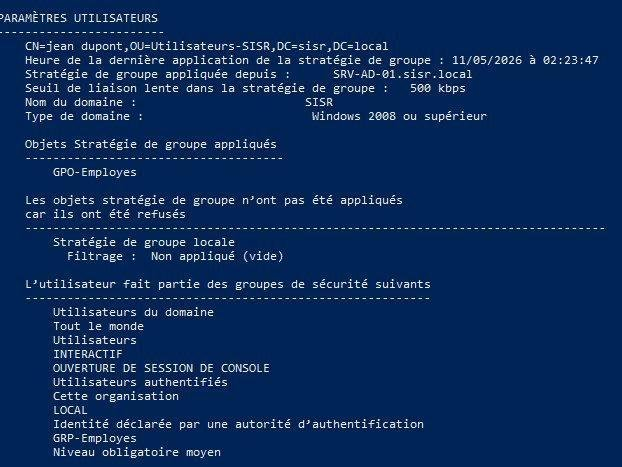
Fig. 20 – gpresult /r — GPO-Employes appliquée, appartenance à GRP-Employes confirmée
PARAMÈTRES UTILISATEURS
CN=jean dupont,OU=Utilisateurs-SISR,DC=sisr,DC=local
Nom du domaine : SISR
Objets Stratégie de groupe appliqués
GPO-Employes
L'utilisateur fait partie des groupes :
GRP-Employes
Utilisateurs authentifiés
Le rapport confirme trois choses : l'utilisateur est bien dans l'OU Utilisateurs-SISR, la GPO-Employes lui est appliquée, et il appartient au groupe GRP-Employes. Effet constaté : Panneau de configuration et Paramètres Windows inaccessibles.
Bilan et Compétences
Difficulté rencontrée et résolue
Cause : le DNS préféré de SRV-AD-01 était réglé sur
127.0.0.1 — le serveur ne s'enregistrait pas correctement dans son propre DNS avec son IP réseau.Solution : DNS préféré changé de
127.0.0.1 vers 192.168.2.10 — jonction réussie immédiatement après.Méthode : analyse des messages d'erreur, tests ping + nslookup pour isoler la couche réseau de la couche DNS, puis vérification côté serveur.
Axes d'amélioration
Sécurisation
Politique de mot de passe complexe via GPO, limitation des tentatives RDP.
Serveur DHCP
Distribution automatique des adresses IP pour éviter la config manuelle.
Sauvegarde AD
Sauvegarde automatique via Windows Server Backup.
DC secondaire
Second contrôleur de domaine pour la haute disponibilité.
GPO avancées
Fond d'écran imposé, désactivation des ports USB, mot de passe renforcé.
Supervision
Monitoring (Zabbix ou Nagios) pour surveiller l'état du serveur AD.
Compétences BTS SIO SISR validées
| Bloc | Compétence | Mise en œuvre |
|---|---|---|
| B1.1 | Gérer le patrimoine informatique | Installation et configuration de Windows Server 2022 et du rôle AD DS sur VM |
| B1.5 | Mettre à disposition des services | Service Active Directory fonctionnel pour les postes clients du domaine |
| Cyber | Confidentialité | Gestion centralisée des droits via GPO, restriction d'accès aux paramètres |
| Cyber | Disponibilité | Service AD DS démarrant automatiquement au lancement du serveur |
Compétences acquises
- Déploiement et promotion d'un contrôleur de domaine Active Directory
- Structuration d'un annuaire : OU, utilisateurs, groupes de sécurité
- Création, liaison et filtrage de stratégies de groupe (GPO)
- Jonction d'un poste client à un domaine Windows
- Diagnostic réseau/DNS méthodique (résolution d'un incident de jonction)